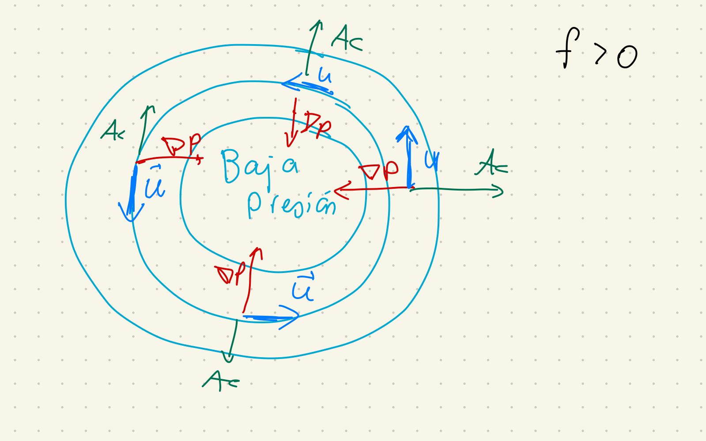

class: center, middle <br/><br/> .title[Dinámica de Fluidos Geofísicos] .subtitle[Clase 11 - Flujos geostróficos (cont.) y ecuaciones de aguas someras] <br/><br/> .author[Semestre 2024-I] .institution[Facultad de Ciencias] <br/> .date[21 de septiembre de 2023] <br/><br/> <img style="width:100%" src="./figures/green_waves.png"> <!-- .note[Created with [{Liminal}](https://github.com/jonathanlilly/liminal) using [{Remark.js}](http://remarkjs.com/) + [{Markdown}](https://github.com/adam-p/markdown-here/wiki/Markdown-Cheatsheet) + [{KaTeX}](https://katex.org)] --> --- name: toc class: left #Contenido 1. [Repaso](#repaso) 1. [Generalización a flujos no geostróficos](#generalizacion) 1. [Ecuaciones de aguas someras] <!-- Comment out the next slide if you don't want the Table of Contents link --> --- layout: true .toc[[✧](#toc)] --- class: left ## Repaso --- class: left **1. ¿Qué términos de las ecuaciones de momento participan en el balance geostrófico?** a) Aceleración de Coriolis, términos advectivos y términos disipativos. b) Aceleración de Coriolis y gradiente de presión. c) Gradiente de presión y términos disipativos. d) Aceleración de Coriolis, gradiente de presión y términos disipativos. -- **respuesta: b** --- **In flujo isobárico es aquel que** a) sigue contornos de presión, es decir, las isóbaras coinciden con sus líneas de corriente. b) es paralelo al gradiente de presión en todo punto. c) tiene la misma presión en todo el espacio. d) atraviesa contornos de presión perpendicularmente. -- **respuesta: a** --- **¿En que dirección giran los vientos de un sistema de baja presión que se aproxima a la costa oeste de México? ** a) Sentido horario b) Sentido antihorario -- **respuesta: b** .center[] --- **En un flujo geostrófico sobre fondo plano, la velocidad horizontal _____1_____ y la vertical _____2_____.** a) 1. es independiente de la profundidad, 2. es diferente de cero. b) 1. aumenta con la profundidad, 2. es cero. c) 1. es independiente de la profundidad, 2. es cero. d) 1. disminuye con la profundidad, 2. disminuye con la profundidad. -- **respuesta: c** --- name: generalizacion class: left ## Generalización a flujos no geostróficos </br></br> Consideremos que el flujo no gira tan rápido, de manera que el término de Coriolis no domina a los demás términos de aceleración, pero sigamos considerando al flujo homogéneo y sin fricción. </br></br> Vamos a las notas... --- ## Referencias: Cushman-Roisin y Beckers - Capítulo 7 Kundu y Cohen - Capítulo 5 </br></br></br></br></br></br></br></br> .note[Notas creadas con [{Liminal}](https://github.com/jonathanlilly/liminal) usando [{Remark.js}](http://remarkjs.com/) + [{Markdown}](https://github.com/adam-p/markdown-here/wiki/Markdown-Cheatsheet) + [{KaTeX}](https://katex.org)]